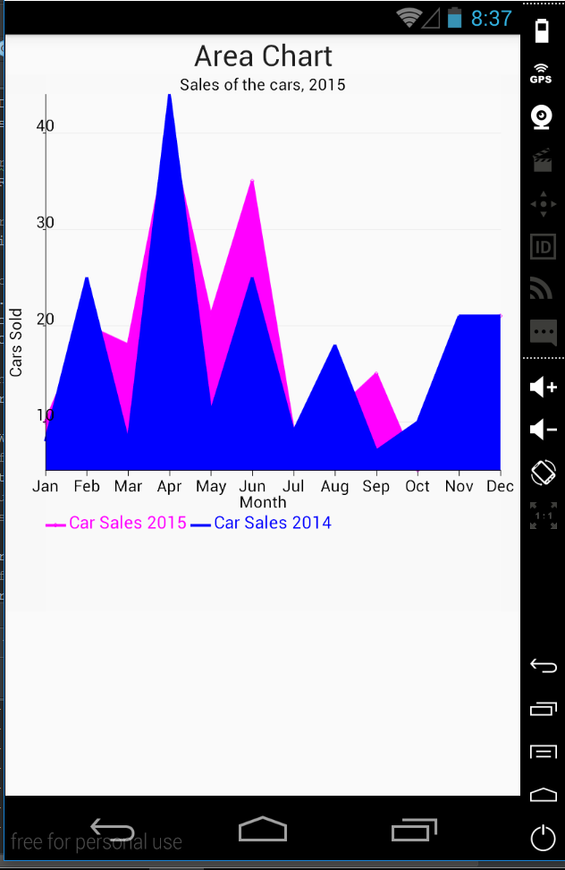

First, we need to create a new activity that will display the area chart. For that, create two new files: activity_area.xml and AreaActivity.java. Include the new activity into the AndroidManifest.xml file:
<activity android:name=".AreaActivity" />The activity_area.xml is the same as for the line chart.
The area chart is similar to the line chart. It is required to use the method public void addFillOutsideLine(XYSeriesRenderer.FillOutsideLine fill). We create a fill and set its color. Next, we call the method to add this fill. Use the Type.BOUNDS_ALL for the fill so it does not go beyond the X axis:
XYSeriesRenderer.FillOutsideLine fill = new XYSeriesRenderer.FillOutsideLine(XYSeriesRenderer.FillOutsideLine.Type.BOUNDS_ALL);
fill.setColor(Color.MAGENTA);
renderer.addFillOutsideLine(fill);Besides that, the code of AreaActivity.java is the same as it was for a basic line chart. We receive the following area chart:
We can customize the area chart in the same way as the line chart. Additionally, we can add the values to the lines using this code:
renderer.setDisplayChartValues(true);All code for creating the customized area chart will be the following:
//define arrays with data
int month[] = {0, 1, 2, 3, 4, 5, 6, 7, 8, 9, 10, 11};
int carSale[] = {10, 20, 18, 40, 21, 35, 9, 11, 15, 5, 20, 21};
//create XY series using defined data
XYSeries series = new XYSeries("Car Sale 2015");
for (int i = 0; i < month.length; i++) {
series.add(month[i], carSale[i]);
}
//create data set and add series to it
XYMultipleSeriesDataset dataset = new XYMultipleSeriesDataset();
dataset.addSeries(series);
//create renderers
XYMultipleSeriesRenderer mRenderer = new XYMultipleSeriesRenderer();
XYSeriesRenderer renderer = new XYSeriesRenderer();
//fill the area below the chart
XYSeriesRenderer.FillOutsideLine fillM = new XYSeriesRenderer.FillOutsideLine(XYSeriesRenderer.FillOutsideLine.Type.BOUNDS_ALL);
fillM.setColor(Color.MAGENTA);
renderer.addFillOutsideLine(fillM);
//set color of the chart
renderer.setColor(Color.BLACK);
//set line width
renderer.setLineWidth((float)4.0);
//set the style for chart's points
renderer.setPointStyle(PointStyle.DIAMOND);
//set if the values on the chart are displayed
renderer.setDisplayChartValues(true);
//give the title for the chart
mRenderer.setChartTitle("Sales of the cars, 2015");
//set the size of the chart title
mRenderer.setChartTitleTextSize((float) 24.0);
//set margins and define their color as transparent
int[] margins = {30, 60, 50, 30};
mRenderer.setMargins(margins);
mRenderer.setMarginsColor(Color.argb(0x01, 0x01, 0x01, 0x01));
//set titles for axes, their size and color
mRenderer.setXTitle("Month");
mRenderer.setYTitle("Cars Sold");
mRenderer.setAxisTitleTextSize((float) 24.0);
//set the size and the color of labels
mRenderer.setLabelsColor(Color.BLACK);
mRenderer.setLabelsTextSize((float)24.0);
//set the background color of the chart
mRenderer.setApplyBackgroundColor(true);
mRenderer.setBackgroundColor(Color.TRANSPARENT);
//set if the grid will be shown
mRenderer.setShowGrid(true);
//create the array of strings for the X axis labels
String[] m = new String[] {
"Jan", "Feb" , "Mar", "Apr", "May", "Jun",
"Jul", "Aug" , "Sep", "Oct", "Nov", "Dec"
};
//add text of labels to the X axis
for(int i=0; i< month.length;i++){
mRenderer.addXTextLabel(i, m[i]);
}
//hide the labels that only their text will be shown
mRenderer.setXLabels(0);
//set color of labels and axes
mRenderer.setXLabelsColor(Color.BLACK);
mRenderer.setYLabelsColor(0, Color.BLACK);
mRenderer.setXAxisColor(Color.BLACK);
mRenderer.setYAxisColor(Color.BLACK);
//set the text size of the legend
mRenderer.setLegendTextSize((float)26.0);
//add XY renderer to multiple renderer
mRenderer.addSeriesRenderer(renderer);
//get the area where the chart will be displayed
LinearLayout chartContainer = (LinearLayout) findViewById(R.id.area_chart_container);
//clean this area
chartContainer.removeAllViews();
//create the area chart
GraphicalView chart = ChartFactory.getLineChartView(AreaActivity.this, dataset, mRenderer);
//display it
chartContainer.addView(chart);The customized area chart:
Let's see how we can add one more series to the same chart. We will add one more area that will indicate car sales for 2014. We need to add the following code to the AreaActivity.java:
int carSale2014[] = {8, 25, 8, 44, 11, 25, 9, 18, 7, 10, 21, 21};
XYSeries series2014 = new XYSeries("Car Sales 2014");
for (int i = 0; i < month.length; i++) {
series2014.add(month[i], carSale2014[i]);
}
dataset.addSeries(series2014);
XYSeriesRenderer renderer2014 = new XYSeriesRenderer();
renderer2014.setColor(Color.BLUE);
renderer2014.setLineWidth((float)4.0);
XYSeriesRenderer.FillOutsideLine fillY = new XYSeriesRenderer.FillOutsideLine(XYSeriesRenderer.FillOutsideLine.Type.BOUNDS_ALL);
fillY.setColor(Color.BLUE);
renderer2014.addFillOutsideLine(fillY);
mRenderer.addSeriesRenderer(renderer2014);We create the array of integers that holds the car sales during 2014. Then, we create series that are named "Car Sales 2014" and add it to the dataset we have created:
XYSeries series2014 = new XYSeries("Car Sales 2014");
for (int i = 0; i < month.length; i++) {
series2014.add(month[i], carSale2014[i]);
}
dataset.addSeries(series2014);We create renderer for this series and set its color and the line width. Also, since we are creating an area chart, we define the fill for this series. Finally, we add the XY renderer to the multiseries renderer:
mRenderer.addSeriesRenderer(renderer2014);We receive: 
However, we can notice that one area is hidden behind another. It happens because we set the color of the fills. We need to eliminate fillM.setColor(Color.MAGENTA); and fillY.setColor(Color.BLUE);. The new area chart is:
In the next section, we will create a scatter chart.